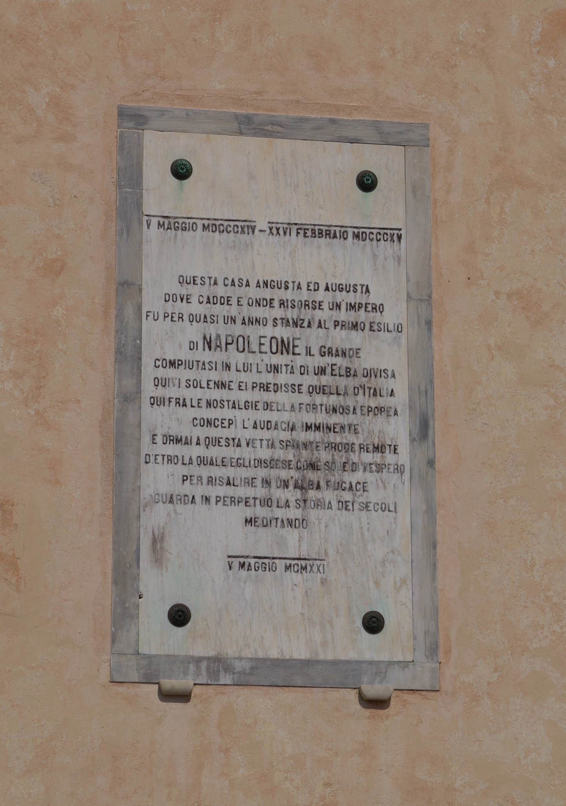
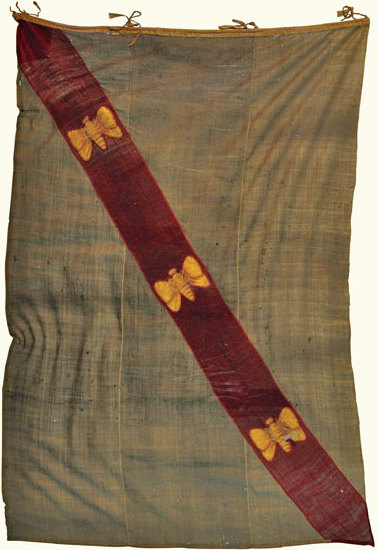
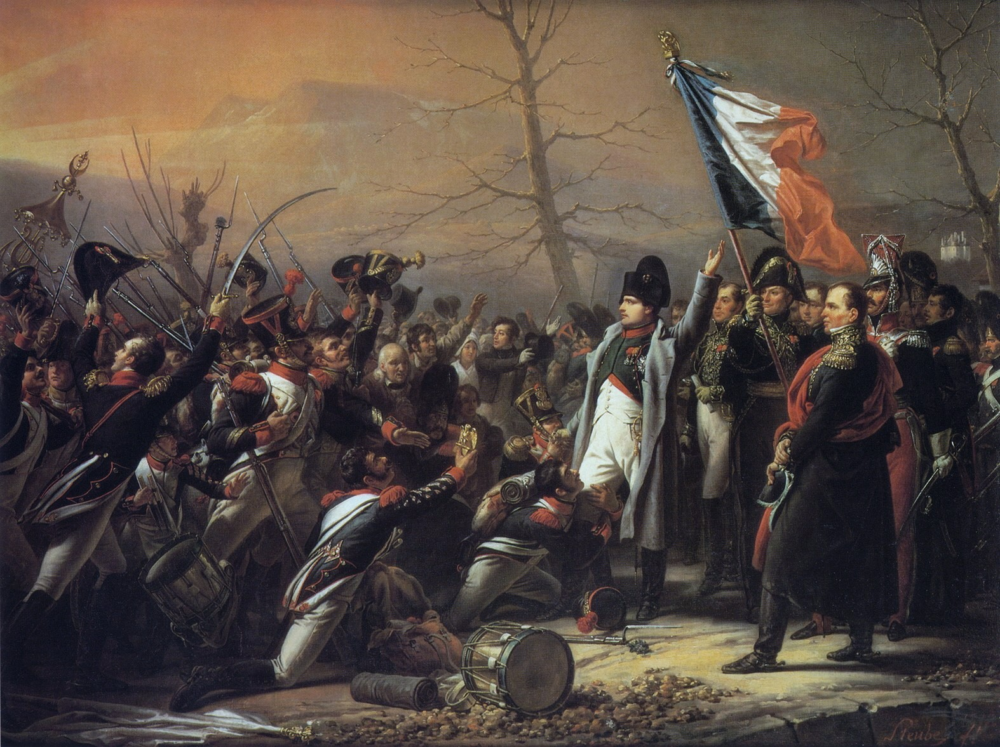

The story everyone knows is the escape: the brig slipping out of the harbor, the Old Guard marching on Paris, the regiment sent to arrest him switching sides. The Hundred Days. Waterloo. The story almost no one knows is what he did with the ten months in between, and it is the more instructive one. Given the smallest possible command, a punitive rock in the Mediterranean, the most capable administrator in Europe could not stop himself from building. He arrived with a defeated army and no working stipend, and within a single year the island had new roads, a dredged harbor, reopened mines, a school, a theatre, a public library, fountains, a hospital, refuse collection, a court of appeal, and a civil code. It is the clearest demonstration on record of what a real operator does with a patch of ground, and it is a standing rebuke to every modern city that has been handed far more and built far less.

Napoleon abdicated at Fontainebleau in April 1814. The Treaty of Fontainebleau, signed on April 11, sent him into exile on paper that looked generous. He kept the title of Emperor, now Emperor of Elba. He was granted a personal guard, full sovereignty over the island, and an annual stipend of two million francs to be paid by the restored Bourbon government of Louis XVIII. He would never receive a single payment of that stipend, a fact that shaped everything he did for the next ten months. He sailed from the south of France aboard the British frigate HMS Undaunted, and on May 3 to 4, 1814, he came ashore at Portoferraio and took possession of a sovereignty roughly the size of an American county.
He did not arrive alone. He brought a government and an army. General Antoine Drouot became Governor of Elba. Grand Marshal Henri-Gatien Bertrand ran his household and staff. Giuseppe Balbiani handled the treasury. General Pierre Cambronne commanded the guard. The military establishment was about a thousand men in total: roughly six hundred of the Old Guard (grenadiers, chasseurs, sailors, and gunners), a hundred Polish lancers, a Corsican battalion of three hundred, and fifty gendarmes. His navy was the brig Inconstant, about three hundred tons, eighteen guns, later up-gunned to twenty-six, with a handful of smaller vessels. This was the apparatus he pointed at an island of twelve thousand people and eighty-six square miles.
Elba in 1814 was a hundred kilometers of coastline, a population of about twelve thousand, and not much else. Iron mines that had been worked since the Etruscans. Salt works. Scrubland and vineyards on the slopes. A tuna fishery. A half-functional harbor at Portoferraio between the forts Stella and Falcone. Pirates and smugglers along the coast. Half the villages had no road connecting them to any other village. It was, in short, an ordinary neglected place, the kind of jurisdiction that in every century absorbs money and produces excuses. He set out to change it, and the record of how he did it survives almost week by week.
He did not rest a day. Contemporary accounts have him giving orders to the townspeople the moment he landed, and on the day after his arrival he was already inspecting Portoferraio's fortifications and riding out to the iron mines. In his first weeks he toured the island end to end on horseback, inspecting the mines at Rio Marina, auditing the salt works at Porto Azzurro, meeting the mayors, cataloguing the harbors and the coastline, and identifying, item by item, what was broken. He was a trained artillery officer and he read ground for a living; he did the survey himself rather than commissioning one. By early summer he had a written reform program for the entire island. He also designed a flag, white with a red diagonal band bearing three golden bees, which flies over Elba to this day. And he took possession of his two residences: the Palazzina dei Mulini, a town palace on the ridge between the two forts overlooking the harbor, and the Villa San Martino, a country house inland that he began remodeling as a private retreat.

Through the height of summer the reform program became construction. He put men to work on the roads, the drainage, the harbor, and the mines all at once. Portoferraio got an underground drainage system to stop the streets from flooding; streets were widened, with walls knocked down where they had to be so the imperial carriage could pass; the road from the town up to his residence was paved. Out on the island he began the network of new roads that would eventually total around sixty miles, including the road up to the hermitage of the Madonna del Monte and the roads linking Portoferraio to the mining districts. He issued decrees on modern agricultural methods, pushed the expansion of the vineyards and the wine trade, and reorganized the tuna fishery. He was, by every account, everywhere at once, because with a defeated army and no stipend the one resource he had in surplus was his own restless attention.
In August his mother, Letizia Bonaparte, known as Madame Mère, arrived on Elba and took a house near the Mulini palace. Her arrival, and soon his sister Pauline's, turned the exile court into something resembling a real capital's social life: concerts, balls, receptions, and theatrical evenings became regular fixtures. Napoleon meanwhile kept the administrative machine running at full speed, holding weekly councils, reviewing his guard daily, and requiring his court to appear in formal uniform. The building went on around the social season; the two were not in competition.
On September 1, 1814, Marie Walewska, his Polish mistress, arrived on the island with their young son Alexandre. They stayed a few days at the hermitage of the Madonna del Monte, high in the hills, before she left again; his wife, the Empress Marie Louise, and their legitimate son never came at all. That same month the Congress of Vienna opened, and with it the first serious talk among the powers of moving Napoleon somewhere far more remote than a Tuscan island. Names like St. Helena, St. Lucia, Trinidad, and the Azores began to circulate. The exile that was supposed to be permanent and comfortable was starting to look temporary and precarious, and Napoleon, well informed through smugglers and visitors, knew it.
Through the autumn the public works matured into institutions. He founded a public library that grew to some eleven hundred volumes. He began converting the deconsecrated Chiesa del Carmine into a proper theatre, the Teatro dei Vigilanti, still the main theatre on the island. He built fountains, established a hospital, and instituted regular refuse collection in Portoferraio, an unglamorous municipal service the island had never had. He stood up a court of appeals and a road inspection corps, the small permanent bodies that keep infrastructure and justice functioning after the builder has moved on. This is the tell of a serious administrator: not the monuments but the maintenance, the library and the garbage collection and the appeals court, the boring machinery of a governed place.
By December the fiscal reality was undeniable. The stipend from France had never arrived. His troops and ships were costing roughly a million francs a year while the island's revenues came to only about four hundred thousand. He cut officials' salaries and leaned on the islanders for unpaid labor, which generated real local resentment. The mines and the salt and the wine were producing more than they ever had, but they could not close a gap that size. A sovereign state with a real army and no external funding cannot run indefinitely on an island economy, and Napoleon, who understood budgets as well as he understood artillery, could see the arithmetic ending badly.
In the new year the Teatro dei Vigilanti opened, the civic capstone of the ten months and a genuine gift to the island's public life. But the same month the money forced retreat: he suspended the road-building program and halted further work on the country residence. He had built more in eight months than the island had seen in a century, and now he was being throttled by a stipend a defeated France had simply declined to pay. The combination of a closing fiscal trap and the news from the mainland, Bourbon unpopularity, a restless army, and the threat of deportation, was resolving into a single conclusion.
On February 16 the British commissioner Neil Campbell, who was supposed to keep an eye on Napoleon, left Elba for the mainland at Livorno. In mid-February an emissary, Fleury de Chaboulon, reached the island with urgent word from France, including a message attributed to Marshal Davout that the moment would not wait. Napoleon moved fast. He had the Inconstant repainted to look like an English ship, re-armed, and provisioned for a hundred and twenty men for three months, and he embargoed all shipping off the island so no word could get out. On the evening of February 26, 1815, embarkation began at five, he embraced his mother and sister at the Mulini palace at seven, and at eight a cannon signaled the departure. The story continues below.
Apr 11, 1814 Treaty of Fontainebleau; exile to Elba
May 3–4, 1814 Napoleon lands at Portoferraio
Summer 1814 60 miles of new road, drainage, harbor, mines
Aug 1814 Madame Mère arrives; the court forms
Sep 1, 1814 Marie Walewska visits the Madonna del Monte
Autumn 1814 Library, hospital, theatre, court of appeal
Dec 1814 Costs ~1M francs vs ~400,000 in revenue
Feb 26, 1815 Escape from Portoferraio, ~1,150 men
He built roughly sixty miles of new road across mountainous terrain, connecting villages that had never been connected to one another and driving new links out to the mining districts and up to the mountain hermitage. He supervised the engineering himself. The comparison is worth stating plainly: a defeated exile with no working budget and a few hundred soldiers built sixty miles of durable mountain road in under a year. Most modern American administrators, with bonding authority and full engineering departments, cannot deliver a single mile of a single street in the same span. In Portoferraio he also solved the problem underneath the roads, laying an underground drainage system so the streets stopped flooding, the kind of invisible infrastructure that cities routinely defer for decades.
The harbor at Portoferraio was reorganized and its trade rebuilt; within months Elba was functioning as a serious little Mediterranean port and its salt exports had climbed. The iron mines at Rio Marina, dug since antiquity, were the fiscal engine, and he treated them as such: he modernized the extraction, pushed up output, and shipped the ore out to be sold, taxing the proceeds to fund the rest of the program. The mines he restarted in 1814 kept producing until 1981. His ten-month administration set an industrial operation running that outlasted him by more than a century and a half. He understood, as competent builders always do, that a public realm has to be paid for by a productive economy, and he rebuilt the economy first.
The list of civic works is what separates an administrator from a tourist. In ten months, on an island of twelve thousand people, he built or established: a public library of some eleven hundred volumes; a theatre carved out of a disused church; fountains; a hospital; regular municipal refuse collection; a court of appeals; and a road inspection corps. He imposed a civil code modeled on the Napoleonic Code of 1804, standardized weights and measures, built a tax system on the old French door-and-window method, and banned public drunkenness. By the island's own account it was the first effective civic administration Elba had ever had. He governed the smallest state in Europe with the same seriousness he had brought to a continent, because seriousness is a habit, not a function of scale.
The flotilla that left Portoferraio on the night of February 26 was the Inconstant, now carrying twenty-six guns, together with the merchant brig Saint-Esprit, the bombard Étoile, the felucca Caroline, and several smaller craft. Aboard were about eleven hundred and fifty men: the six hundred of the Old Guard, a hundred Polish lancers without their horses, the three hundred of the Corsican battalion, fifty gendarmes, and around a hundred civilians and servants. Light winds becalmed them; by dawn on the 27th they had barely made ten kilometers, and that afternoon a French brig, the Zéphir, came close enough to hail before its captain was talked past. At dawn on March 1, 1815, the flotilla raised the tricolor and by early afternoon anchored at Golfe-Juan, between Cannes and Antibes. Napoleon was back on French soil.

The march north produced the scene that defines the whole return. Near Grenoble, at Laffrey, he met the 5th Regiment of the Royal Army, sent to stop him. He walked forward alone, opened his coat, and said: "Soldiers of the Fifth, if there is any among you who would shoot his Emperor, here I am." Every man in the regiment switched sides. The men sent to arrest the revival became the revival. He reached Paris on March 20 without a shot fired, and the Hundred Days had begun. They would end at Waterloo in June.
Nothing captures the collapse of the Bourbon regime's nerve like the way the Paris press covered the march. As Napoleon drew closer to the capital, the headlines climbed from contempt to terror to open flattery, the same man renamed step by step from monster to Emperor. The sequence below is the famous, much-embellished version long attributed to the official gazette, the Moniteur; whether or not every line ran exactly as legend has it, the arc is real, and it is the sound of an establishment discovering it has no ground to stand on.
The empire did not survive. The island did. Most of the modern roads on Elba, the harbor works at Portoferraio, the drainage, the civic squares, the theatre, and the school and library system still trace to those ten months, and the Rio Marina mines he reopened ran until 1981. A man passing through as a prisoner, expecting to leave, left behind the permanent civic bones of a place he governed for less than a year and never saw again. That is the strange, clarifying fact at the center of the story: he did not build Elba because he loved it or planned to stay. He built it because building is what a serious operator does with any ground he is standing on.
This site is an argument that competent civic building is a real and teachable practice, not an accident of money or luck. Elba is the cleanest possible test of that argument, because it strips away every excuse. No budget: the stipend was never paid, and by December he was running at a loss. No time: he had ten months and did not know it would be ten months. No mandate worth having: he was a defeated prisoner on a rock the powers of Europe were already planning to take from him. No workforce to speak of: a thousand soldiers and a poor island population. And still, in that single year, sixty miles of road, a rebuilt harbor, reopened mines, a library, a theatre, a hospital, a court, and a code.
Seattle has eighty-four square miles, almost exactly the area of Elba. It has had not ten months but twenty years, a multi-billion-dollar budget, professional engineering and planning departments, and a peacetime mandate from its own voters. It has produced neither the roads nor the harbor works nor the balance sheet. The gap between what Napoleon did with Elba and what a modern American city does with the same acreage is not a gap of resources. It is a gap of seriousness, of accountability, and of the plain willingness to survey the ground, write down what is broken, and build it.
The point is not the strongman. Napoleon the conqueror is not the man to admire here, and the empire he tried to rebuild ended in a field in Belgium. The man to study is Napoleon the administrator: the surveyor on horseback, the lawgiver, the builder of roads and libraries and drains. The lesson of Elba is that this kind of competence exists, that it is recognizable, and that it can be applied to any patch of ground by anyone willing to do the work. That is the standard. Most places do not meet it. The first step to meeting it is to notice that a bored exile, running at a deficit, with the powers of Europe closing in, did.
Building this kind of civic capacity in a real American city. Tell us who you are.
Sources. Treaty terms, administration, and military establishment: Wikipedia, "Principality of Elba." Reforms and public works (roads, drainage, mines, library, theatre, refuse collection, court of appeal): napoleon.org and infoelba.com; Portoferraio bicentennial materials. Governance, finances, family visits, and the escape (Campbell's departure, the flotilla, Golfe-Juan): Shannon Selin, "How did Napoleon escape from Elba?"; History.com. Dates for Marie Walewska's visit (Sept 1, 1814) and the flag: visitelba.com. Compiled and cross-checked July 2026.